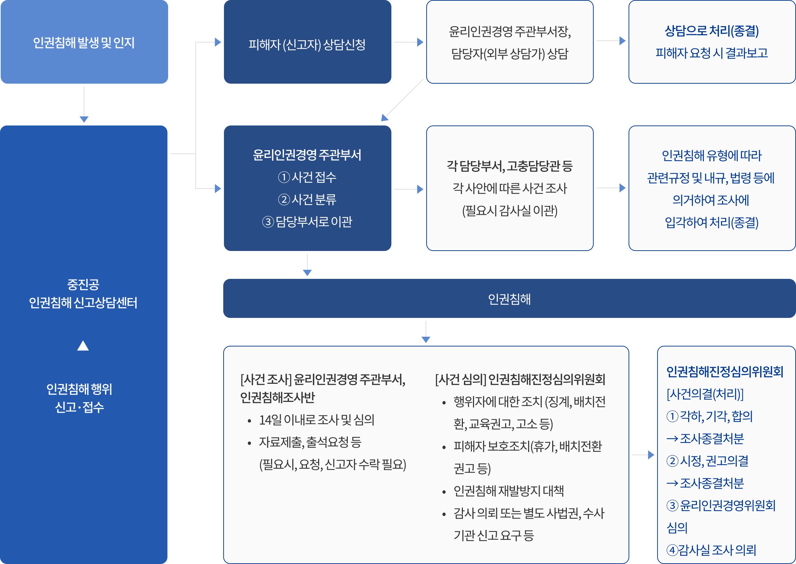

인권침해 신고상담센터


인권침해 신고상담센터는?
중소벤처기업진흥공단 및 소속 직원으로부터 인권침해나 차별을 당하셨나요?
인권침해나 차별을 당한 사람, 또는 그 사실을 아는 사람이면 인권침해 진정을 접수할 수 있습니다. 접수된 진정 사건은 피해 구제를 위해 중진공 인권경영 이행지침에 따라 조사 처리됩니다.
신고대상
- 인권침해 행위를 하는 중진공 임직원
신고 내용
- 인간으로서 존엄을 실현하기 위해 반드시 보장되어야 하는 최소한의 기본적인 권리들을 침해하는 것을 말합니다.
유형 및 대표사례
- 평등권 침해
-
- 성별 , 연령 , 성정체성 , 결혼여부 , 신체적 조건, 출신지역 등을 이유로 한 차별행위
- 종교 , 사상 또는 정치적 의견을 이유로 한 차별행위
- 사회적 신분 , 학력 , 장애 , 가족상황 , 병력 등을 이유로 한 차별행위
- 자유권 침해
-
- 사생활과 통신, 개인정보를 함부로 간섭하는 행위
- 종교나 신념 , 양심에 따라 행동하고 의견을 자유롭게 표명할 권리를 제한하는 행위
- 집회 ·결사의 자유 , 선거권과 피선거권을 함부로 제한하는 행위
- 징계 등에 있어 절차적 권리를 무시하는 행위
- 폭력
-
- 기합 , 체벌 , 가혹행위 , 구타 등의 신체적 폭력을 가하는 행위
- 폭언 , 욕설 , 모욕 등의 언어적 폭력을 가하는 행위
- 술자리에서 억지로 술을 마시게 하거나 집에 가지 못하도록 강요하는 행위
- 노동·안전·환경
-
- 강제 노동 행위
- 안전하고 위생적인 작업환경을 제공하지 않는 행위
인권침해와 민원불편 신고의 차이점
- 인권침해 신고 : 위 표에 언급된 사항 등에 해당하는 인권침해를 당하여 이에 대한 부당함을 표현하고 싶은 경우
-
민원불편 신고 : 공공기관 등이 본인의 의무를 다 하지 않아 권리를 침해받은 경우
- 민원인이 중진공 정책이나 행정제도 및 사업 운영 등의 개선에 관한 건의, 허가, 인가 등의 신청, 제 증명의 신청, 국가인권위원회 법령 해석, 행정업무, 진정사건처리 등에 대한 질의 자료요구 등 특정행위를 요구하는 경우
인권침해 구제 체계

신고 및 상담 방법
- 개인정보보호를 위해 로그인 없이 상담 및 신고하실 수 있습니다.
- 상담을 원하실 경우에는 아래 온라인 작성양식에 내용을 직접 작성해 주시기 바라며, 인권침해 발생에 따라 신고를 원하실 경우에는 아래 인권침해진정신청서를 작성 후 첨부파일로 제출해 주시기 바랍니다.